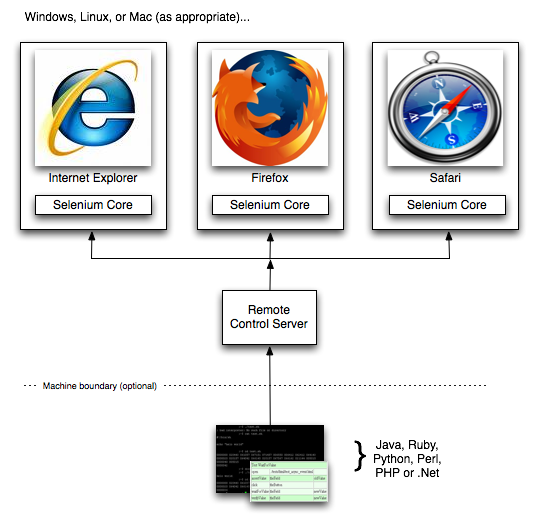

Selenium
Вече се запознахме с това какво е автоматизираното тестване и защо е добре да го ползваме. Сега ще разберем и какво е Selenium. А по-точно - Това е framework за софтуерно тестване на уеб приложения. Selenium сигурява записване и въпроизвеждане на авторски тестове. Големият плюс на приложението е, че не е нужно да знаеш определен език, за да тестваш даден уеб сайт. Selenium предоставя и свой собствен език - Selenese, който може да се комбинира с едни от на-популярните програмни езици като Java, Perl, Python, Ruby, PHP и други. Всички тестове могат да се изпъляват на на-новите браузъри, както и на различни операционни системи - Windows, Linux или Macintosh. Framework-ът е open-source, може безплатн да се сваля от официалния си сайт и с лекота да се използва.
Selenium се състои от следните компоненти: - Selenium IDE - Selenium WebDriver - Selenium Remote Control - Selenium Grid Всеки от тези компоненти е разгледан по-подробно в седващите точки.
1. Selenium IDE
Selenium IDE е интегрирана среда за разработка на Selenium скриптове. Имплементирана е като Firefox приложение и позволява записването, редактирането и дебъгването на тестове. IDE-то включва в себе си Selenium COre и така позволява по-бързото и лесно записване и изпълнение на тестовете в реална среда.
Seleniumm IDE-то не е просто приложение за записване на тестовете. То е цялостна среда за тяхното разработване. Всеки тестър или разработчик може сам да редактира тестовите си скрипта. Средата поддържа подсказки и възможността за лесна смяна на команди. Това е идеалната среда за разработката и редактирането на Selenium тестове, в какъвто си стил решите.
Възможности, които предоставя на потребителите: - лесно запсиване и изпълнение на тестовете - интелигентно търсене по имена, пътища и идентификационни номера - подсказки за всички Selenium команди - "разходка" по тестовете - дебъгване и поставяне на прекъсващи точки(breakpoint) - всички тестове могат да се запазват като HTML, Ruby ии други скриптове - поддържа и потребителските Selenium-extensions.js файлове
2. Selenium WebDriver и Selenium Remote Control
WebDriver
Главната новост в Selenium 2.0 е интеграцията на WebDriver интерфейсът. WebDriver е проектиран да предоставя прост, по-обобщен програмен интерфейс в допълнение със премахването на някои ограничения, идващи от Selenium-RC интерфейсът. Selenium-WebDriver е разработен за по-добра поддръжка на динамични страници, където елементи от страницата, могат да бъдат променяни, без да се презарежда цялата страница. Целта на WebDriver е да осигури добре направен обектно-ориентиран интерфейс, който предоставя подобрена поддръжка за тестване на последните поколения интернет приложения. Как WebDriver управлява браузърът, в сравнение със Selenium-RC? Selenium-WebDriver прави директни извиквания към вградените функции на браузъра, като по този начин постига по-добра автоматизация. Начинът по който се правят тези извиквания и характеристиките, които имат - зависи от браузъра, който използвате. Повече информация за поддръжката към всеки браузър - можете да намерите по-късно в тази глава. За хората, запознати със Selenium-RC, Selenium-WebDriver е малко по-различен от това, с което сте свикнали. Selenium-RC работи по един и същи начин за всеки един браузър. Като вкарваше javascript функции в браузърът, когато той се зареди, а после използваше тези функции, за да управлява AUT в контекста на браузъра. WebDriver не използва тази техника. То отново управлява браузърът, но използва вградената в браузъра поддръжка за автоматизация.
Selenium Remote Control
Selenium Remote Control (RC) е тестово приложение, което дава възможност на свите потребители да създават автоматизирани уеб тестове предназначени за дизайна на различни приложения. Може да се създават на какъвто и да е език, както и да се тестват всички HTTP сайтове.
Selenium RC идва в две части: - Сървър, който автоматично зарежда браузъри и ги "убива" и играе ролята на proxy за уеб заявки. - Клиентски библиотеки за всички използвани програмни езици.
Казано в няколко думи: Selenium Remote Control е страхотно приложение за тестване на сложни AJAX-базирани потребителски уеб интерфейси. Подходящ за продължително тестване на системите. SRC е идеалното решение за всички потребители на Selenium IDE, които желаят да пишат тестове на някой по-интересен език в сравнение с Selenese HTML форматираните таблици.
3. Selenium Grid
Selenium Grid е един от многото тулове в семейството на Selenium. Това приложение позволява на Selenium Remote Control-а да тества голям брой test suites на различни видове среди. Selenium Grid дава възможност на потребителите си да пускат своите тестове паралелно и то на различни машини. Това има два основи плюса:
- Първо, ако имаш един сбор от множество тестове, можеш да ускориш тяхното изпълнение, като си пускаш на различни машини. - Второ - освен на различни машини, можеш и на различни среди да тестваш. Grid също работи паралелно, за да пести време.